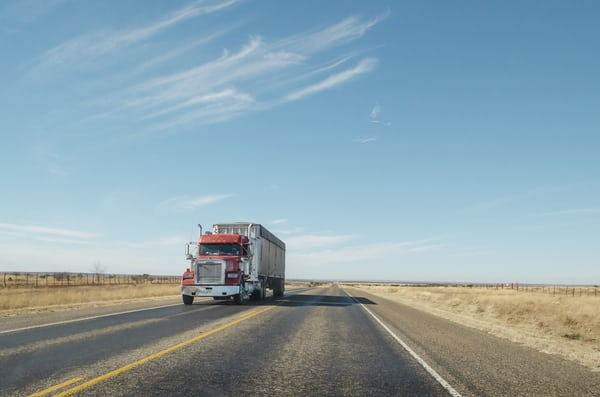

We have competitive pricing, and professional technicians. Let us keep your truck running strong.
| Oil Change |
Oil Change with Air Filter |
Oil Change with Air Filter and Full Inspection |
| $50 |
$65 |
$90 |
| 15 Minutes |
25 Minutes |
35 Minutes |
Flat or worn out tires, we can replace or repair with name brand tires. With affordable tire
rotations and alignments for maximum tire life
| Flat Repair |
Tire Rotation |
Tire Balance |
| $10 |
$25 |
$15 |
Dot inspection
Our certified dot technicians will quickly inspect and repair any faults during the DOT certification.